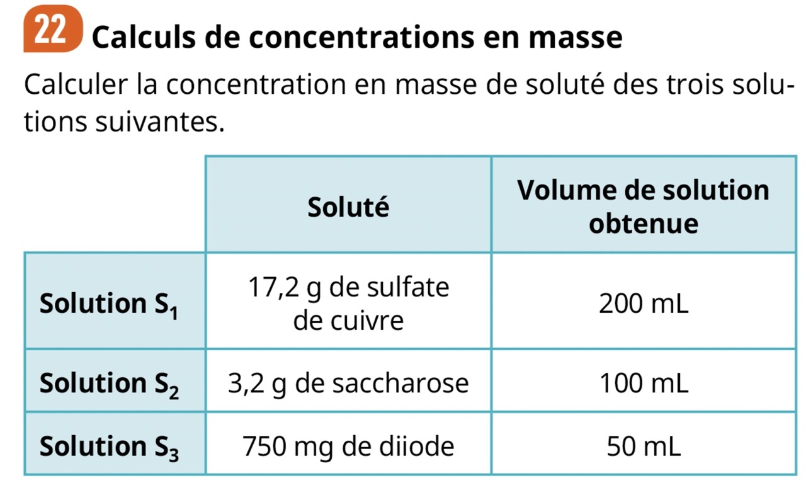

Solutions aqueuses
- Définition d'une solution aqueuse
- Identifier le soluté et le solvant d'une solution aqueuse à partir de sa composition ou de son mode opératoire de préparation.
- Définir la concentration en masse et la concentration en masse maximale de soluté
- Déterminer la concentration en masse de soluté dans une solution aqueuse à partir du mode opératoire.
- Déterminer la concentration en masse maximale de soluté a partir de données expérimentale
- Différencier dissolution et dilution
- Préparer une solution aqueuse à la concentration en masse de soluté demandée
- Déterminer la valeur d’une concentration en masse à l’aide d’une gamme d’étalonnage (échelle de teinte ou mesure de masse volumique).
- Pour mieux comprendre la notions d'incertitude sur une mesure : Mesurer des masses pour étudier la variabilité du volume mesuré par une pièce de verrerie.
- choisir et utiliser la verrerie adaptée pour préparer une solution par dissolution ou par dilution.
Le cours
1. Solutions aqueuses, Solvant et soluté
Définition
Solution aqueuse
(source : eduscol)
Remarques
- Les solutés peuvent être de nature solide, liquide ou gazeuse.
- Aqueux : Emprunté du latin aquosus, dérivé de aqua « eau »
Exemples
- Tous les sodas sont des solutions aqueuses contenant, entre autres, du sucre comme soluté
- L'eau minérale dont les minéraux sont les solutés
- L'eau gazeuse dont le dioxyde de carbone est un soluté gazeux
- Pour les adeptes de la muscu : le "shaker de protéine" est une solution aqueuse dont le soluté est la protéine en poudre
- Le vin
- En réalité la plupart des boissons sont des solutions aqueuses
Contre-Exemples
- Bien que l'essence soit un Mélange homogène il ne contient pas majoritairement de l'eau. C'est une solution MAIS PAS une solution AQUEUSE
- De l'eau pure n'est pas une solution aqueuse car ce n'est pas un mélange donc il n'y a pas de soluté
2. Concentration en masse
Définitions
Concentration en masse
(source : eduscol)
autrement dit :
Divisez la masse de soluté \(m_{soluté}\) présente en solution, par le volume total \(V_{tot}\) de la solution. Vous aurez
alors une quantité en \(g.L^{-1}\) qu'on appelle concentration en masse et qu'on note généralement \(C_m\) soit :
\(C_m = \frac{m_{soluté}}{V_{tot}}\)
Concentration maximale d'un soluté
(source : eduscol)
Attention : Il faut bien faire la différence entre la
masse volumique
et la
concentration en masse
Exemples
Source : exercice 22, page 29, Physique-chimie 2nde collection ESPACE édition BORDAS

Correction :
- \(C_{m1} = \frac{17,2}{0,200} = 86 \ g.L^{-1}\)
- \(C_{m2} = \frac{3,2}{0,100} = 32 \ g.L^{-1}\)
- \(C_{m3} = \frac{0,750}{0,050} = 15 \ g.L^{-1}\)
La concentration maximale du sel dans l’eau à 25 °C est égale à 360g de sel par litre de solution. c'est à dire qu'a 25°C on ne peut pas dissoudre plus de 360 grammes de sel dans de l'eau.
3. Préparer une solution aqueuse
Pour préparer une solution aqueuse avec une concentration en masse de soluté donnée, il peut y avoir deux cas de figure :
- Soit on dispose du solvant (l'eau distillée) et du soluté, dans ce cas on procède à une dissolution
- Soit on dispose déjà de la solution qu'on appelle solution mère mais la concentration en masse de soluté est supérieure à la concentration voulue, on procède donc à une dilution pour obtenir la solution fille de concentration voulue.
Exemple
- Mettez du sucre dans votre café vous avez réalisé une dissolution
- Maintenant imaginez que votre café est trop sucré, vous allez alors rajouter un peu d'eau chaude (ou de café) pour diluer le café. Vous avez réalisé une dilution.
Capacité expérimentale
Les vidéos proposées sont des compléments de cours accessibles depuis votre livre BORDAS numérique. Vous trouverez aussi
les protocoles écrits détaillés page 306 et 307 du livre.
4. Dosage par étalonnage
N'ayez crainte cette méthode à l'appellation d'apparence compliquée ne présente en fait pas vraiment de difficultés.
Analogie introductive
Imaginez que je vous donne un cube et que je vous demande sans règle ni aucun autre appareil de mesure de me donner
le volume de ce cube. A part me donner une intuition à vu d'oeil, vous n'en aurez aucune idée.

Maintenant si je vous donne en plus 5 ou 6 cubes en vous indiquant leur volume écrit en mètre cube dessus,
vous serez en mesure de comparer le premier cube aux autres pour me donner un volume plus précis.

On peut donc conclure que le volume du cube inconnu est compris entre 2 et 3 mètres cube.

Mesurer une concentration ??
Le problème étant qu'on ne peut pas mesurer directement la concentration en masse de soluté d'une solution avec un appareil de mesure. Il n'existe pas de "concentrationmètre" donc on utilise des propriétés physiques reliées à la concentration. Par exemple plus la couleur est intense plus la concentration en masse est élevée (pensez au sirop de grenadine). Et lorsque la solution est incolore on utilise la masse volumique car plus la concentration est élevée plus la masse volumique est grande.Il y a deux cas de figure :
La solution est colorée
Dans ce genre de solution, plus elle est concentrée, plus la couleur est intense. On a donc une propriété mesurable a l'oeil nu, reliée à la concentration


Si la solution est incolore
Nous utiliserons la masse volumique. En effet plus la concentration en masse est élevée plus masse volumique est grande.

Cette fois ci nous devons mesurer la masse volumique de solutions de concentrations connues afin d'établir une
courbe d'étalonnage :

Puis nous mesurons la masse volumique de la solution de concentration inconnue. On en déduit la valeur de cette concentration inconnue
grâce a la courbe d'étalonnage.